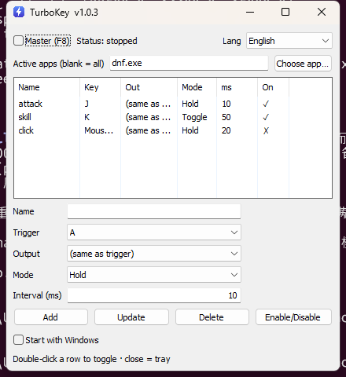

A lightweight Windows auto-fire tool. Bind a key to repeat itself — or another key — automatically, while held or as an on/off toggle. Each rule has its own interval. Works with normal apps and with games.
Free • single self-contained .exe • no runtime to install • requires Windows 10/11

Everything you need to automate a key, and nothing you don't.
Repeat while a key is held, or press once to start and again to stop. Each rule its own mode and interval.
Trigger and output can be any keyboard key or mouse button — left, right, middle, X1, X2.
Keys are injected as hardware scan codes via SendInput and held briefly, so poll-based and DirectInput games sample them reliably.
Limit rapid-fire to specific apps by process name, or pick from running programs. Leave blank to work everywhere.
Closing minimizes to the tray; a global F8 master switch toggles everything. Optional start with Windows.
Localized UI auto-detected from your OS, including fully mirrored right-to-left Arabic and Hebrew layouts.
Download turbokey.exe and launch it. Accept the UAC prompt — elevation lets it reach games that run as admin.
Pick a trigger key, an output key, a mode, and an interval in milliseconds, then click Add.
Press F8 (or tick the master switch) to arm the tool globally.
Hold or tap your trigger key and it repeats automatically. Press F8 again when you're done.
down → hold ~30ms → up pulses tagged so the tool never re-triggers itself. The interval is the gap between presses; the practical ceiling is ~25–30 presses/second, which is plenty since games sample input per frame.
Auto-detected from Windows, switchable in-app. Read the docs in your language on GitHub.